Custom Transducers
BabelBrain can load your own transducer designs alongside its built-in devices. You describe the transducer in a YAML file then BabelBrain:
- Validates file
- Generates necessary transducer files
- Runs a Rayleigh simulation in water so you can check the geometry and the beam before using it.
Workflow
-
In the file-selection dialog, choose the computing engine (local GPU or remote server). It is used for the Rayleigh simulations during creation.
-
In the Transducer drop-down, choose
➕ Add / remove custom transducer…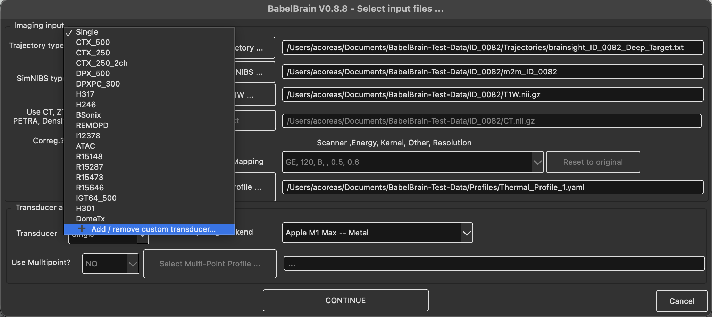
-
The Manage Custom Transducers dialog lists the custom transducers already installed. From here you can:
- Add… a new transducer (next step).
- Remove the selected transducer. After confirmation its folder is deleted.
- Move up / Move down to change the order in which custom transducers appear in the drop-down
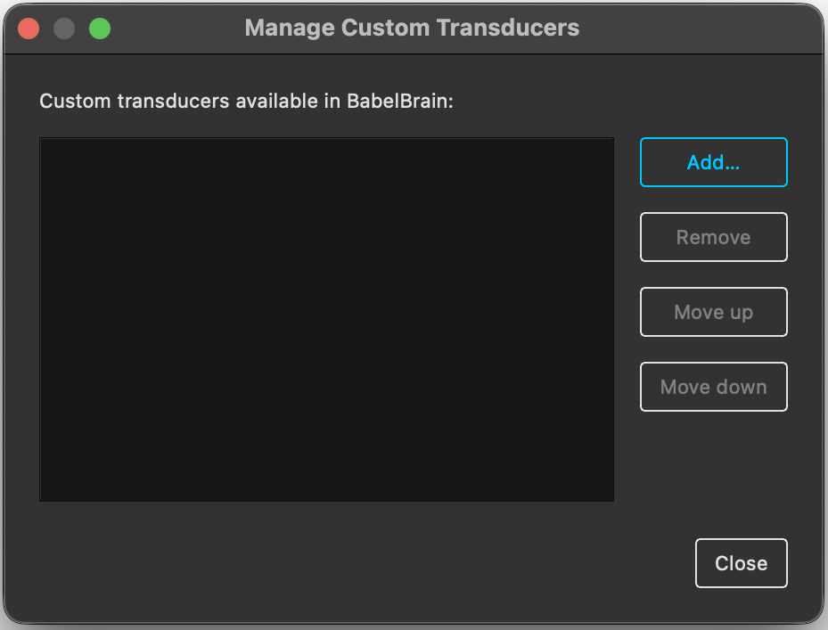
-
In the Add Custom Transducer dialog, click Select Config file, choose your YAML file and click Create Transducer.
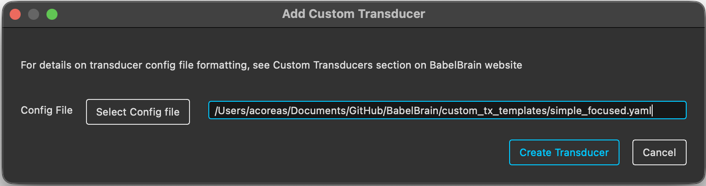
- BabelBrain validates the file:
- If there is a problem, an error dialog shows the offending YAML line and the reason. After you close it, the Add Custom Transducer dialog reopens with the same file selected, so you can fix the file and click Create Transducer again.
- If a custom transducer with the same
<ClassName>already exists, you are asked whether to overwrite it.
-
If the file has no
PlanTUStables, BabelBrain estimates them with Rayleigh simulations (see PlanTUS parameters). This can take a while for transducers with many frequencies or a wide steering range. -
The verification window shows the transducer geometry (with the focal spot and the out-plane marked) next to the simulated water field. Click Continue to keep the transducer, or Cancel to discard it. If you were overwriting an existing transducer, cancelling restores the previous version.
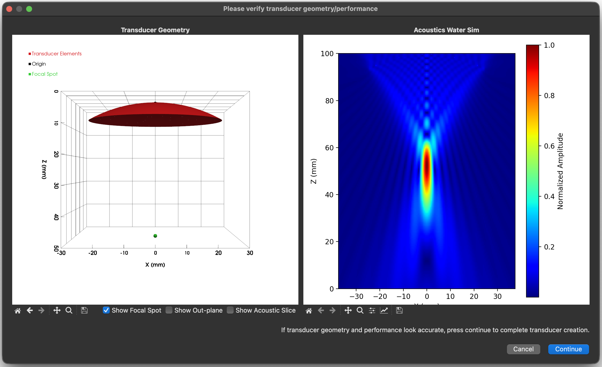
The transducer then appears in the drop-down as Custom: <ClassName>, where <ClassName> is the PascalCase form of name (e.g. my-tx_500 → MyTx500). Its generated files are saved in ~/.config/BabelBrain/Transducers/babel_<ClassName>/. Do not edit these files by hand; change the YAML file and add the transducer again instead.
Units and conventions
| Quantity | Unit |
|---|---|
| Lengths, diameters, positions, steering limits, PlanTUS distances | metres (m) |
| Frequencies | hertz (Hz) |
Spherical angles (theta, phi) | degrees |
PyYAML only reads scientific notation as a number if it has a decimal point and a signed exponent. Anything else is read as text and fails validation:
| You write | PyYAML reads |
|---|---|
64.0e-3 | 0.064 ✅ |
5.0e+5 | 500000.0 ✅ |
64e-3 | "64e-3" (text) ❌ |
500.0e3 | "500.0e3" (text) ❌ |
Plain decimals (0.064, 500000.0) are safest.
Templates
Ready-to-edit templates are available in custom_tx_templates/. Each is a valid file that reproduces a built-in device, with every parameter explained inline. Copy one, rename the transducer and replace the values.
geometry_type / template | Description | Steering | Reproduces |
|---|---|---|---|
simple_focused | Single-element spherical cap | none | Single (500 kHz) |
flat_annular_array | Concentric flat rings | z | H246 |
focused_annular_array | Concentric rings on a spherical cap | z | CTX500 |
flat_array_2D | Square elements in a flat plane | x, y, z | REMOPD |
focused_array | Circular elements on a spherical cap, aimed at the focus | x, y, z | H317 |
Every file must contain a Template Version: <number> line (e.g. # Template Version: 1.0).
Common parameters
| Parameter | Required | Description |
|---|---|---|
name | yes | Starts with a letter; letters, digits, _ and - only (no spaces). Its <ClassName> cannot match a built-in transducer. |
geometry_type | yes | One of the five types above. |
frequencies | yes | List of whole numbers (Hz), 200–1000 kHz in 5 kHz steps, no duplicates. The first is used for the verification simulation. |
aperture_size | yes | Aperture diameter, or full width of the active surface for arrays (m). |
focal_length | focused types | Radius of curvature (m). Not used by flat types, which have no natural focus. |
distance_tx_bottom_to_outplane | no (default 0) | Fabrication dead space (m) between the rim of the transducer surface and the edge of the device (the out-plane), e.g. housing or coupling membrane. Must be ≥ 0. Not applied for simple_focused transducers |
distance_outplane_to_focus | no, focused types only | Distance (m) from the out-plane to the focal spot. Not allowed for flat types. |
mechanical_adjustment | no | Lateral X/Y mechanical adjustment limits [min, max] (m) in Step 2. Defaults to [-0.010, 0.010]. |
PlanTUS | no | See PlanTUS parameters. |
Type-specific parameters
Simple Focused
No extra parameters. There is no electronic steering, and the focal length and diameter shown in Step 2 are fixed to the values in the file.
Dead space is not supported for this type: Step 2 always places the out-plane at the rim, so its out-plane distance is focal_length − h. Leave distance_tx_bottom_to_outplane and distance_outplane_to_focus out of the file.
Transducer Diagram:
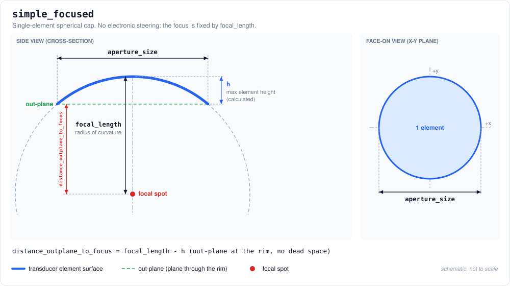
Example Transducer Yaml:
# Template Version: 1.0
name: MySingleTx
geometry_type: simple_focused
frequencies:
- 500000
aperture_size: 0.050
focal_length: 0.050
Corresponding Plot:
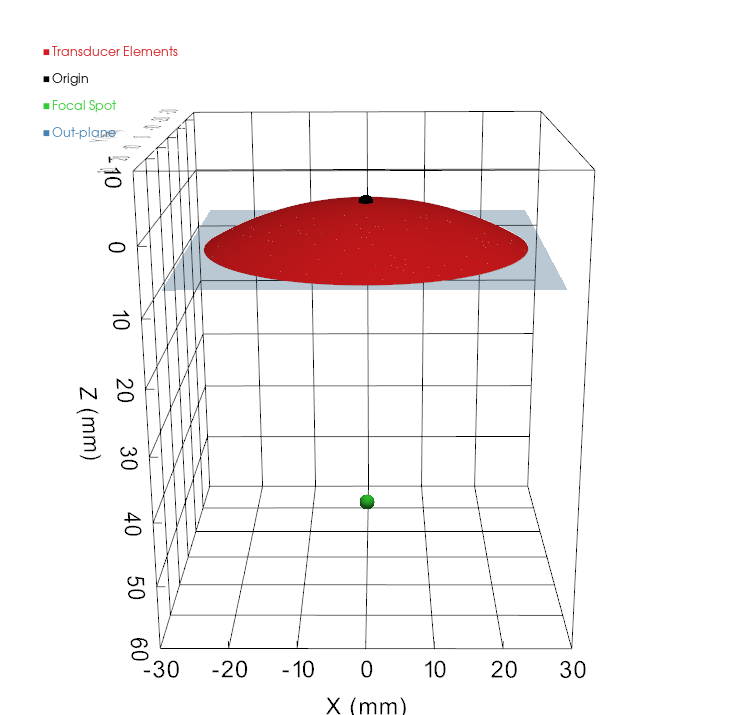
Flat Annular Array
| Parameter | Description |
|---|---|
num_elements | Number of rings. |
annular.inner_ring_diameters | Inner diameter of each ring (m), innermost first. 0.0 for a solid central disc. |
annular.outer_ring_diameters | Outer diameter of each ring (m); each larger than its inner diameter. |
steering.z | Focal depths [min, max] (m) measured from the array plane, min > 0. Also the TPO distance range in the GUI. |
- There is no natural focus:
focal_lengthanddistance_outplane_to_focusare not used. The verification simulation focuses at the middle ofsteering.z. - Automatic PlanTUS estimation is not available for this type; enter the
PlanTUStables yourself to use PlanTUS.
Transducer Diagram:
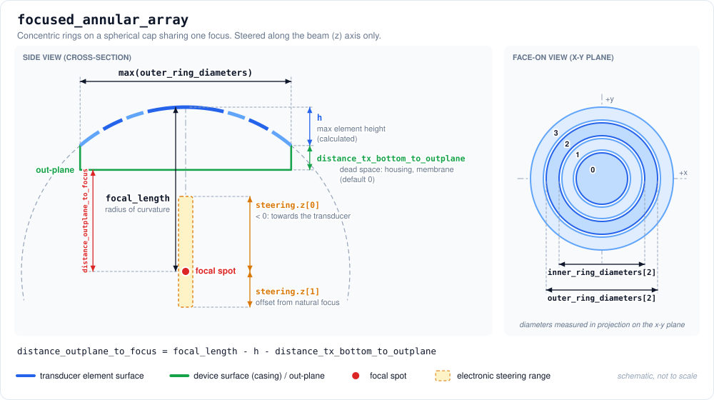
Example Transducer Yaml:
# Template Version: 1.0
name: MyFlatAnnular
geometry_type: flat_annular_array
frequencies:
- 500000
aperture_size: 0.0336
num_elements: 2
annular:
inner_ring_diameters: [0.0, 0.0240]
outer_ring_diameters: [0.0233, 0.0336]
steering:
z: [0.025, 0.095]
Corresponding Plot:
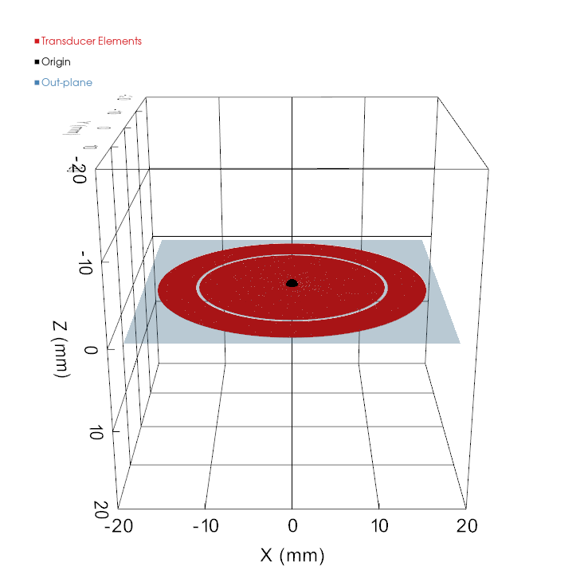
Focused Annular Array
| Parameter | Description |
|---|---|
num_elements | Number of rings. |
annular.inner_ring_diameters | Inner diameter of each ring (m), innermost first. 0.0 for a solid central disc. |
annular.outer_ring_diameters | Outer diameter of each ring (m); each larger than its inner diameter. |
steering.z | Focal depths [min, max] (m) measured from the array plane, min > 0. Also the TPO distance range in the GUI. |
Same parameters as flat_annular_array, with two differences:
- Ring diameters are measured in projection onto the x-y plane, not along the curved surface.
focal_lengthmust be ≥ half the largest outer diameter. steering.zis an offset from the natural focus; negative moves towards the transducer andabs(min)≤focal_length. The GUI's TPO range isfocal_length + steering.z(30–82.5 mm below).
Transducer Diagram:
Example Transducer Yaml:
# Template Version: 1.0
name: MyFocusedAnnular
geometry_type: focused_annular_array
frequencies:
- 500000
- 545000
aperture_size: 0.064
focal_length: 0.06294
distance_outplane_to_focus: 0.05238
num_elements: 4
annular:
inner_ring_diameters: [0.0, 0.0316988, 0.0442688, 0.0536688]
outer_ring_diameters: [0.03114, 0.04371, 0.05311, 0.06083]
steering:
z: [-0.03294, 0.01956]
Corresponding Plot:
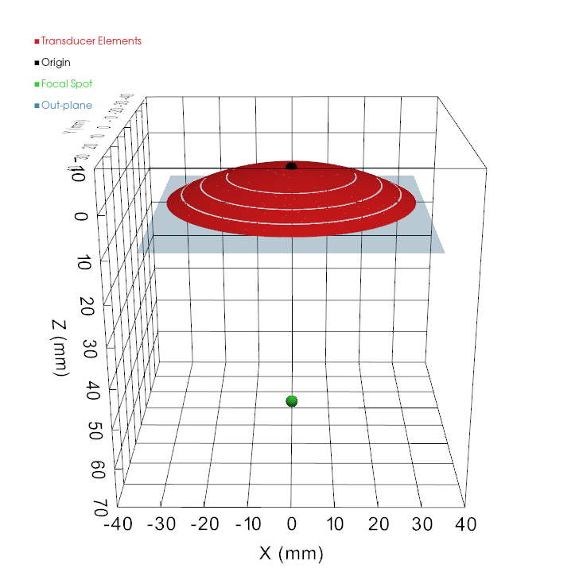
Flat Array 2D
| Parameter | Description |
|---|---|
num_elements | Number of elements. |
element_size | Side length of each square element (m). Centres must be at least this far apart. |
elements.x, .y | Element centre positions (m) in the array plane, num_elements entries each. elements.z is not accepted: all elements lie at z = 0. |
steering.x, steering.y | Lateral steering ranges [min, max] (m). |
steering.z | Focal depths [min, max] (m) measured from the array plane, min > 0. |
- Origin: the centre of the array, in the plane of the element faces.
distance_tx_bottom_to_outplaneis applied automatically to move the out-plane away from the element plane.- There is no natural focus:
focal_lengthanddistance_outplane_to_focusare not used. The verification simulation focuses at the middle ofsteering.z. - Keep the pitch close to one wavelength (3 mm at 500 kHz) to avoid grating lobes. The 4 × 4 example below only shows the format.
Transducer Diagram:
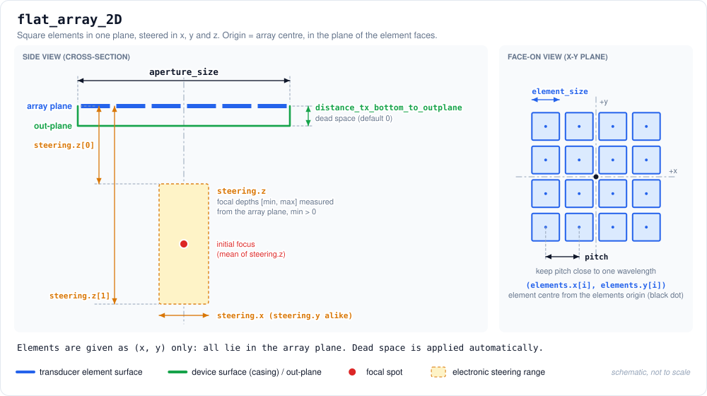
Example Transducer Yaml:
# Template Version: 1.0
name: MyFlatMatrix
geometry_type: flat_array_2D
frequencies:
- 500000
aperture_size: 0.040
distance_tx_bottom_to_outplane: 0.0012
num_elements: 16
element_size: 0.0095
elements: # 4 x 4 grid, 10 mm pitch, centred on the origin
x: [-0.015, -0.005, 0.005, 0.015, -0.015, -0.005, 0.005, 0.015, -0.015, -0.005, 0.005, 0.015, -0.015, -0.005, 0.005, 0.015]
y: [-0.015, -0.015, -0.015, -0.015, -0.005, -0.005, -0.005, -0.005, 0.005, 0.005, 0.005, 0.005, 0.015, 0.015, 0.015, 0.015]steering:
x: [-0.020, 0.020]
y: [-0.020, 0.020]
z: [0.020, 0.090]
Corresponding Plot:
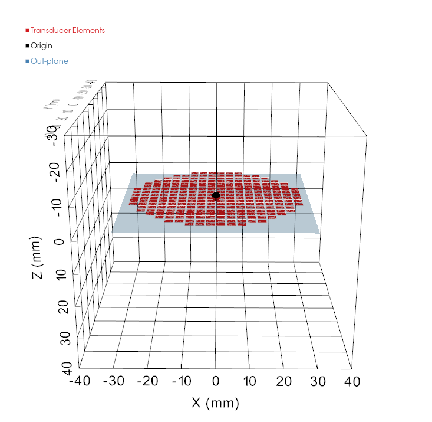
Focused Array
| Parameter | Description |
|---|---|
num_elements | Number of elements. |
element_size | Diameter of each circular element (m). Centres must be at least element_size / focal_length radians apart. |
element_coordinate_system | cartesian or spherical. |
elements.x, .y, .z | Cartesian element centres (m) relative to the focus. |
elements.r, .theta, .phi | Spherical element centres: radius (m), polar angle (deg), azimuth (deg). |
steering.x, .y, .z | Steering ranges [min, max] (m). z is an offset from the natural focus, abs(min) ≤ focal_length. |
- Origin: the geometric focus. Elements lie on a sphere of radius
focal_lengthand face the focus; the bowl apex is at(0, 0, focal_length), so elementzvalues are positive. - Steering uses a different frame:
steering.x,.y,.zare offsets from the natural focus with +z pointing from the transducer towards the target, the opposite of the element +z. A negativesteering.zmoves the focus towards the transducer, as forfocused_annular_array. - Cartesian:
x² + y² + z² = focal_length². - Spherical:
thetais the polar angle from the beam axis (0° = apex, increasing towards the rim);phiis the azimuth from +x towards +y.x = r·sin(theta)·cos(phi),y = r·sin(theta)·sin(phi),z = r·cos(theta). - Only the direction of each position is used to place the element; its distance from the focus (including
r) is not checked. Positions in mm or from the wrong origin give a wrong layout without an error, so check the verification window. distance_outplane_to_focusis the default Distance Cone to Focus in Step 2.
Transducer Diagram:
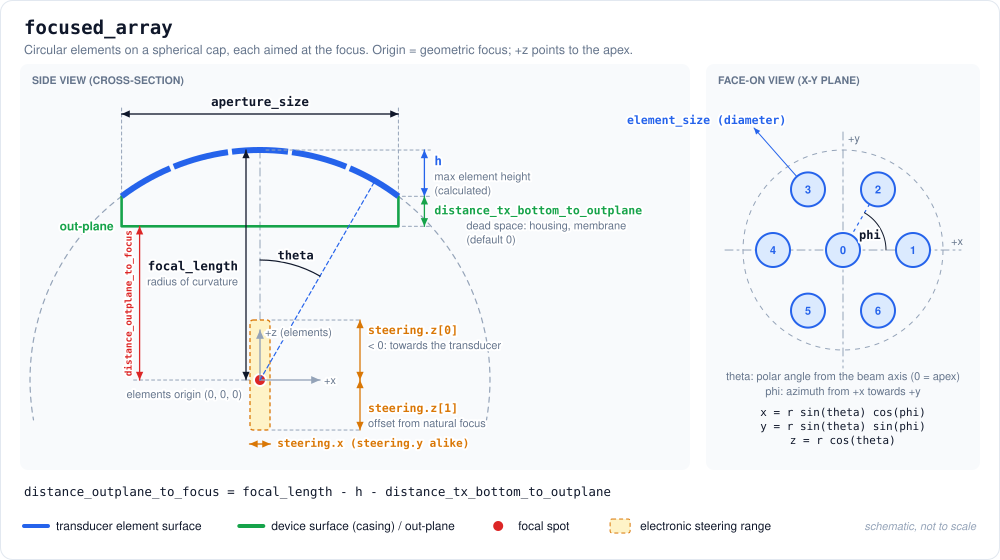
Example Transducer Yaml:
# Template Version: 1.0
name: MyFocusedArray
geometry_type: focused_array
frequencies:
- 500000
aperture_size: 0.064
focal_length: 0.070
num_elements: 7
element_size: 0.015
element_coordinate_system: spherical
elements: # centre element plus a ring of six at 20 degrees
r: [0.070, 0.070, 0.070, 0.070, 0.070, 0.070, 0.070]
theta: [0.0, 20.0, 20.0, 20.0, 20.0, 20.0, 20.0]
phi: [0.0, 0.0, 60.0, 120.0, 180.0, 240.0, 300.0]
steering:
x: [-0.010, 0.010]
y: [-0.010, 0.010]
z: [-0.015, 0.015]
The same elements in cartesian coordinates:
element_coordinate_system: cartesian
elements:
x: [0.0, 0.02394, 0.01197, -0.01197, -0.02394, -0.01197, 0.01197]
y: [0.0, 0.0, 0.02073, 0.02073, 0.0, -0.02073, -0.02073]
z: [0.070, 0.06578, 0.06578, 0.06578, 0.06578, 0.06578, 0.06578]
Corresponding Plot:
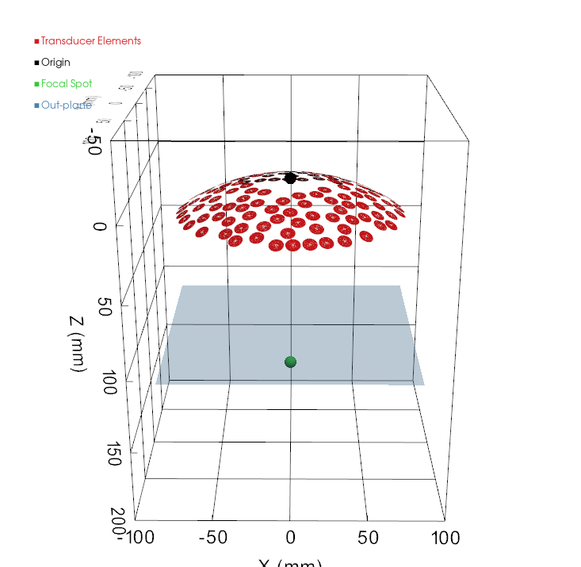
Optional parameters
PlanTUS
PlanTUS is optional and gives the PlanTUS integration focal distances and matching FHML (full-length at half maximum) values, in metres, for every frequency in frequencies. Both lists must be the same length and contain no negative values.
PlanTUS:
500000:
FocalDistanceList: [0.030, 0.035, 0.040, 0.045, 0.050]
FHMLList: [0.018, 0.030, 0.038, 0.050, 0.060]
If PlanTUS is omitted, BabelBrain estimates the tables with Rayleigh simulations in water for each frequency (except for flat_annular_array):
- Steerable types are swept in 2 mm steps over the
steering.zrange (as absolute depths for flat types, orfocal_length + steering.zfor focused types). simple_focuseduses a single point atfocal_length.